Next: Linear Spans Up: Vector Spaces Previous: The Outer Product Contents Index
The manipulative properties which define a vector space are carried over from  to
to  , so
the associative, commutative and distributive properties for vectors in
, so
the associative, commutative and distributive properties for vectors in  still apply. We
therefore only have to check for the existence of certain vectors in
still apply. We
therefore only have to check for the existence of certain vectors in  . Specifically, we need to
check
. Specifically, we need to
check
If the answer to any one of these questions is no, then  is not a subspace and we cannot treat it
as a vector space over
is not a subspace and we cannot treat it
as a vector space over
 .
.
Notice that the second condition assures us that  is in
is in  . It also assures us that
if
. It also assures us that
if  is in
is in  , then
, then
 is in
is in  .
.
We can use a theorem to give us a test to see if a collection of vectors from a vector space is really a subspace.
Any vector space is a subspace of itself. There is certainly no need to check its properties.
The simplest example of a subspace is just the vector  . The properties of a vector space
assures us that this subspace is a subspace of every subspace. This subspace is called
the zero subspace.
. The properties of a vector space
assures us that this subspace is a subspace of every subspace. This subspace is called
the zero subspace.
Any subspace of a vector space other than the vector space itself or the zero subspace is called a proper subspace .
Suppose we had several subspaces of a vector space  . Combining all vectors that are common
to all subspaces is called taking the intersection of
the subspaces. We use the symbol
. Combining all vectors that are common
to all subspaces is called taking the intersection of
the subspaces. We use the symbol  to refer to the intersection of two subspaces so that
to refer to the intersection of two subspaces so that
 means that
means that
 contains all vectors common to the two subspaces
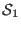
and
contains all vectors common to the two subspaces
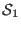
and
 .
.
Recall that we can write a system of equations in the form  where
where  is an
is an  matrix and
matrix and
 is an
is an  matrix. The solution space of this system is all
matrix. The solution space of this system is all
 matrices
matrices  which satisfies this equation. If
, then this matrix equation is called
a homogeneous system. Otherwise it is referred to as nonhomogeneous.
which satisfies this equation. If
, then this matrix equation is called
a homogeneous system. Otherwise it is referred to as nonhomogeneous.
The solution space of the homogeneous system
 is often called the null space
of
is often called the null space
of  and we refer to it as
and we refer to it as
 . If
. If
 exists, then it forms a subspace. This subspace is
the most important subspace we will encounter. To prove that it is a subspace we will use the
result of a previous problem where we proved that
exists, then it forms a subspace. This subspace is
the most important subspace we will encounter. To prove that it is a subspace we will use the
result of a previous problem where we proved that
 , all
, all  matrices over a field
matrices over a field
 ,
is a vector space. (If you didn't do the problem, shame on you. Go back and do it now.) Obviously
,
is a vector space. (If you didn't do the problem, shame on you. Go back and do it now.) Obviously
 is a vector in this vector space. Suppose we have
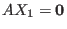
and
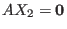
are any solutions to the
homogeneous system. For any
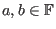
,
is a vector in this vector space. Suppose we have
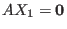
and
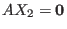
are any solutions to the
homogeneous system. For any
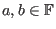
,
 and, similarly,
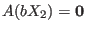
. Then
and, similarly,
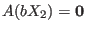
. Then
 and
and
 . (Again, showing that matrix multiplication is associative was an assigned problem.)
Therefore
. (Again, showing that matrix multiplication is associative was an assigned problem.)
Therefore
 is a vector in the solution space, so we have shown
is a vector in the solution space, so we have shown
 is a subspace.
is a subspace.
 is sometimes also referred to as the kernel of
is sometimes also referred to as the kernel of  .
.
There exists a very nice relationship between homogeneous and nonhomogeneous systems. Suppose we have a
nonhomogeneous system  and two solutions, 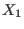
and
and two solutions, 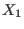
and  . By the distributive law of matrix
multiplication, we have
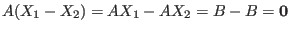
. This means that 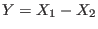
is a solution of the
homogeneous system
. By the distributive law of matrix
multiplication, we have
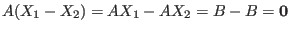
. This means that 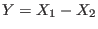
is a solution of the
homogeneous system
 . Looking at this another way, if
is a particular solution of the nonhomogeneous system
. Looking at this another way, if
is a particular solution of the nonhomogeneous system  and
and  is any other solution of
is any other solution of  , then there exists a
, then there exists a  , a solution of the
homogeneous system
, a solution of the
homogeneous system
 , such that
, such that  . This means that we can get all solutions to
. This means that we can get all solutions to
 by finding one particular solution and then finding all solutions to
by finding one particular solution and then finding all solutions to
 .
.
One geometric example of this would be the intersection of two planes which do not go through the origin. We would first use the same translation to move the planes so that they go through the origin. Then we would find the line of intersection, then translate this line back.
It is important to remember that a vector space is not simply a collection of vectors, but that it must also have
two binary operations defined. These operations are `inherited' by a subspace. For example,
the vector space
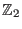
is simply composed
of the two integers 0
and  . Yet
is not a subspace of
. Yet
is not a subspace of
 , even though
, even though
 contains
these two integers, since addition is defined differently for these two vector spaces.
contains
these two integers, since addition is defined differently for these two vector spaces.
This section may appear a bit abstract and far removed from many of the ideas of matrix manipulation which we have covered. This is not true at all and we will discuss a situation which will begin to tie together many of the concepts we have already seen.
We will examine two particular subspaces of
 and show that their intersection is also a subspace. In
and show that their intersection is also a subspace. In
 let
be all points
that satisfies the equation
let
be all points
that satisfies the equation
 . We have seen that this
equation determines a plane in
. We have seen that this
equation determines a plane in
 that passes through the origin. This means
is a subspace of
that passes through the origin. This means
is a subspace of
 (from the result of a problem in this section). We also let
(from the result of a problem in this section). We also let
 be a subspace of
be a subspace of
 defined as
all points
that satisfies the equation
defined as
all points
that satisfies the equation  . Then the intersection of these two subspaces,
. Then the intersection of these two subspaces,
 , is all points
which satisfies both equations. We can write this as a homogeneous
system of equations.
, is all points
which satisfies both equations. We can write this as a homogeneous
system of equations.
We can represent this system of equations by the matrix equation

We use an augmented matrix containing

This matrix can be row reduced (using Lamp, perhaps) to get
All solutions to this homogeneous system are given by
One can use Lamp to visualize the intersection of these two subspaces by entering the associated matrix
in a 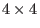
matrix with zeros in the last two rows and graphing the system. Then one can enter
the row reduced form in the bottom two rows and graph the resulting system. Using the Segment button,
we can see that the intersection of the four planes is on the line  .
.
Suppose we wanted to find the intersection of two planes which do not go through the origin. We could have, for example, the nonhomogeneous system:
To get a particular solution we start by writing the associated matrix.
This matrix can be row reduced to get
There are an infinite number of solutions. If we let 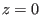 , then one solution is
The associated homogeneous system reduces to

If we let , then we have all solutions given by
which, as we have seen, is a vector equation for a line in
| 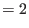 | ||
| 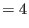 | ||